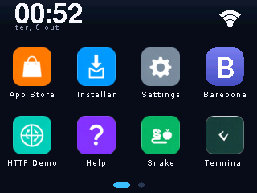
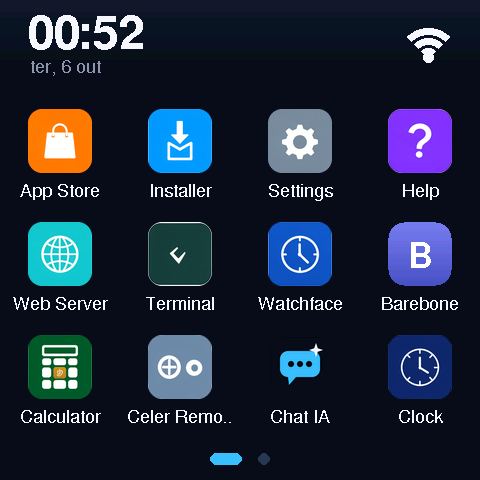
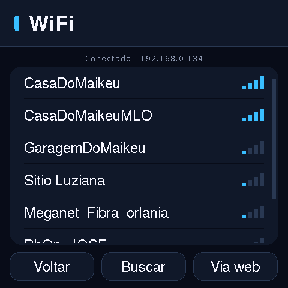
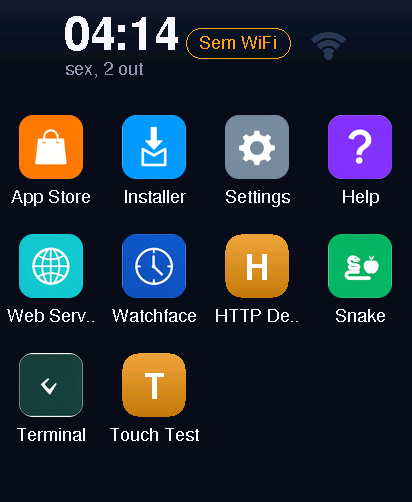
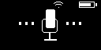

CYD · ESP32-2432S028R #




- Chip: ESP32 clássico, 4 MB flash, sem PSRAM — o firmware roda unicore e usa a IRAM como heap extra para caber TLS + Duktape.
- Tela: ILI9341 320×240 landscape, touch resistivo XPT2046
com calibração interativa de 5 pontos (persistida em
/local/touch_cal_p.bin). - Extras: LED RGB, LDR (brilho automático), alto-falante, sem BLE no build padrão (build experimental
build-cyd-bt— fora da matilha), e microSD compartilhando o HSPI com o TFT — o cartão monta como segundo dispositivo do barramento (multi-device do driver SPI do IDF) e vira o/sdcom giagas para apps. - Canal OTA:
esp32
SmartDisplay · 4848S040 #




- Chip: ESP32-S3 com 8 MB de PSRAM — é aqui que apps grandes (acima de 48 KB) e o bundle completo de CAs do TLS vivem à vontade.
- Tela: IPS 480×480, touch capacitivo (sem calibração), áudio I2S via NS4168.
- Extras: BLE · matilha CelerNet de série, slot microSD dedicado (FAT em
/sd) e a variante SmartDisplay Y com relés — firmware próprio evariantde SKU no manifest OTA (ex.:smartdisplay-y8). - Canal OTA:
smartdisplay_4848S040
Waveshare · AMOLED 2.06 (relógio) #


- Chip: ESP32-S3, display AMOLED redondo 412×502 em QSPI, touch capacitivo GT911.
- Perfil: relógio de verdade — BLE · matilha CelerNet (papel: tela + microfone), watchfaces como plugins, notificações do Phone Link (Gadgetbridge) e inset circular: o canvas lógico 240×320 é mapeado no vidro redondo com máscara.
- Canal OTA:
waveshare_amoled206
Spotpear · ZZ-PET (cachorro robô) #


- Chip: ESP32-S3, OLED 128×64, servos de marcha, microfone e IMU.
- Perfil: o cachorro de estimação — BLE · matilha CelerNet (papel: patas, microfone e leds), tela de status (bateria, modo),
voz com wake word "Hi Celer" e IA on-device; é a placa do
dog bench em
tools/dog/. - Canal OTA:
spotpear_zzpet
Devkit · barebone #
- Qualquer ESP32 devkit sem tela — o perfil para desenvolver o sistema:
logs no serial,
celerctlcompleto e apps JS rodam "cegos" (o framebuffer existe mesmo sem vidro, e oscreencapfunciona). - Canal OTA:
devkit
Comparativo #
| Placa | Canal OTA | Chip | Vidro | Touch | PSRAM | SD | BLE |
|---|---|---|---|---|---|---|---|
| CYD 2432S028R | esp32 | ESP32 | 320×240 ILI9341 | resistivo | não | compartilhado ✓ | experimental |
| SmartDisplay 4848S040 | smartdisplay_4848S040 | ESP32-S3 | 480×480 IPS | capacitivo | 8 MB | dedicado ✓ | matilha |
| Waveshare AMOLED 2.06 | waveshare_amoled206 | ESP32-S3 | 412×502 AMOLED ⬤ | capacitivo | sim | — | matilha |
| Spotpear ZZ-PET | spotpear_zzpet | ESP32-S3 | 128×64 OLED | — | sim | — | matilha |
| Devkit | devkit | ESP32 | — | — | conforme placa | — |
✓
Uma tela, um firmware. A coluna "vidro" é a resolução física; os apps
sempre desenham em 240×320 lógico e o Layout do firmware faz o
mapeamento (escala, rotação e inset) por placa.